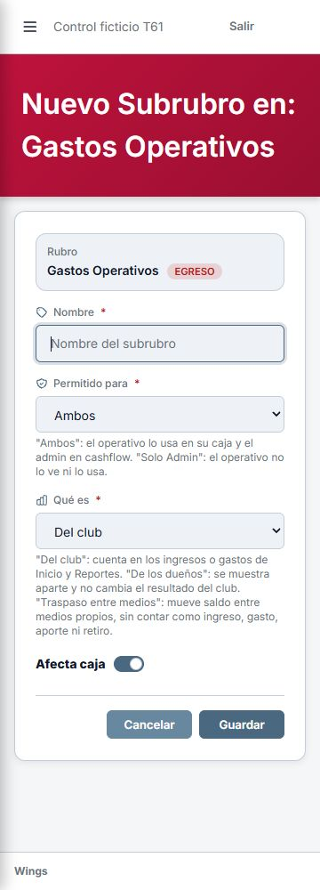
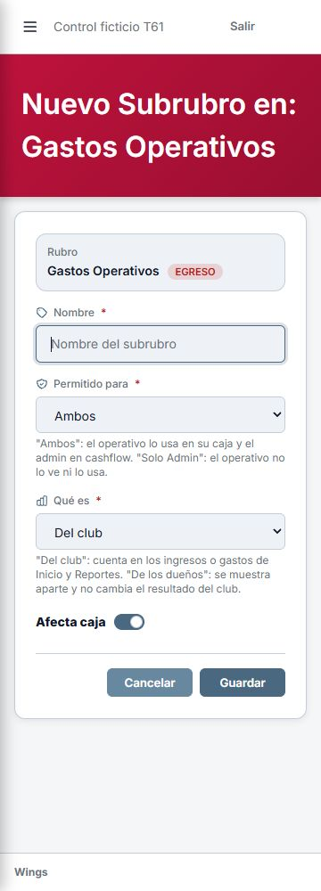
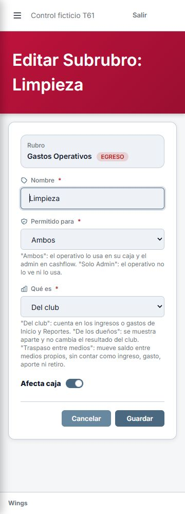
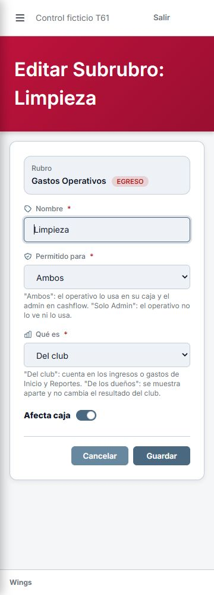
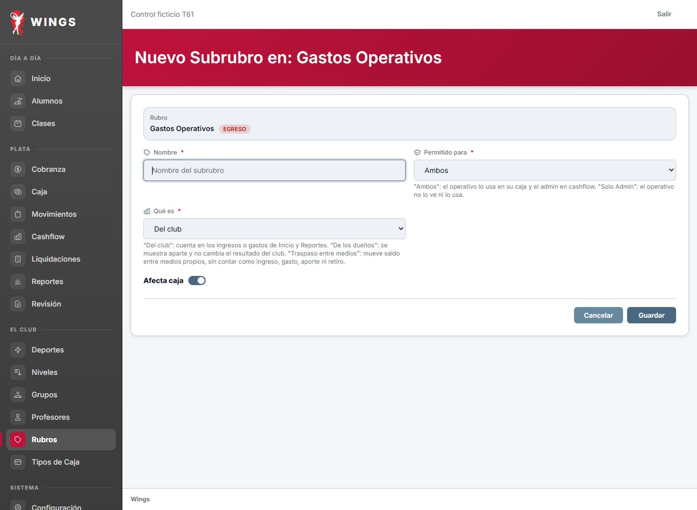
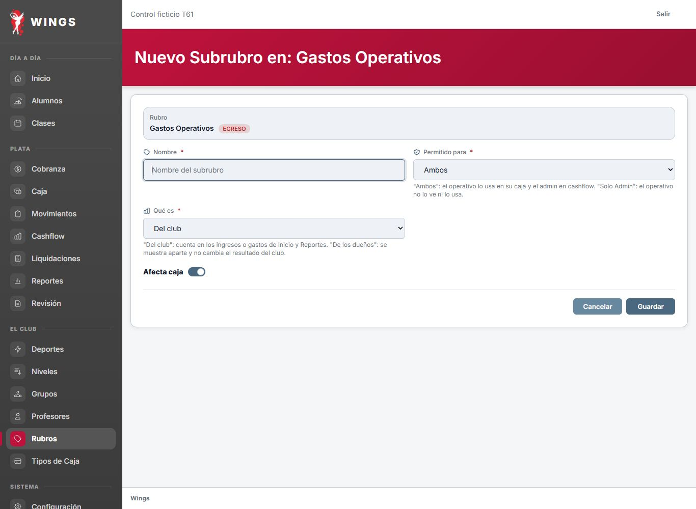
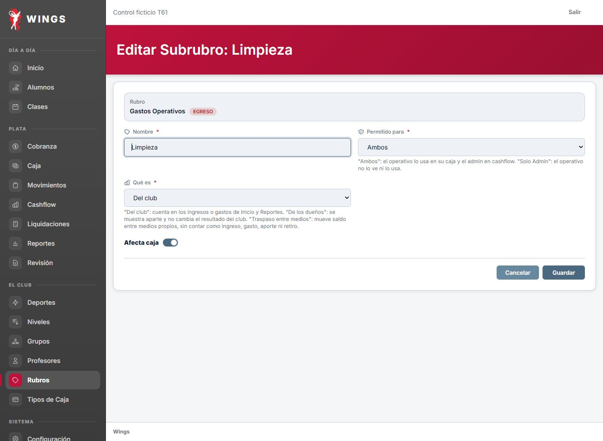
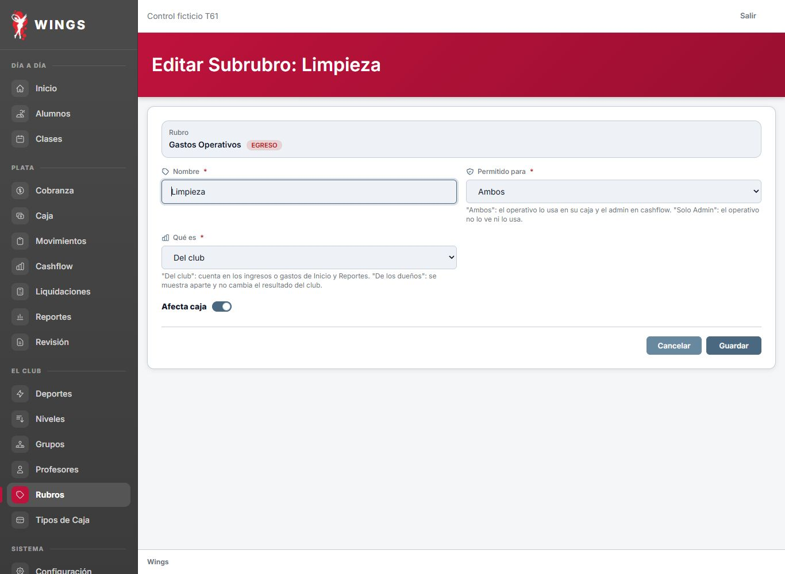

Capturas reales de Wings en localhost, usuario y base ficticios de Codex. Se retira TRASPASO de las opciones y su explicación. La transferencia aprobada no cambia. Archivos medidos: 1366 × 1000 y 360 × 1000. Se había solicitado viewport 375; esa medida no está demostrada por las imágenes. Pendiente recaptura exacta a 375 y revisión de Carlos. No se alteraron las imágenes para simularla.







